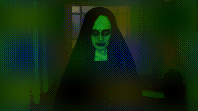
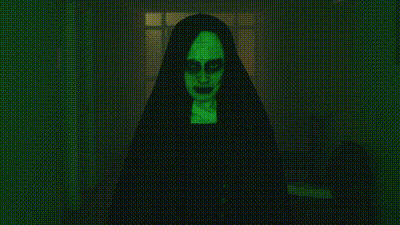

$ATAN
WELCOMES YOU TO HELL
 

In the shadowy depths of this accursed domain, where the very air reeks of malevolence, I, the embodiment of unyielding darkness, stand before you. Tremble, mortals, as my chilling presence looms over your feeble souls. From the throne of damnation, I command with the wrath of a thousand hells. Obey my decree, for your defiance will fuel the fires of torment that await. Kneel before the infernal might that courses through my veins, and let terror consume you, for I am the puppeteer of anguish, the architect of nightmares. Hear my words and shudder, for in this realm, resistance is but a futile whisper in the howling tempest of eternal suffering. Heed this dread-filled command, and your anguish may be softened, dare to challenge, and you shall be eternally lost within the abyss of horrors beyond comprehension. Here, the flames of remorse burn ceaselessly, fueled by the darkness that festers within the hearts of sinners. The cacophony of anguished souls shall be your eternal symphony, a haunting melody that echoes through the depths of damnation.Abandon all hope, ye who enter here, for the hounds of hell await to unleash their ravenous fury upon the damned. Your sins have summoned you to this accursed realm, and your punishment shall be as eternal as the night itself. Prepare to witness the full extent of your wickedness, for the infernal abyss spares none from its penetrating gaze. The tendrils of damnation shall ensnare your spirit, and you shall be forever entangled in the web of eternal suffering.